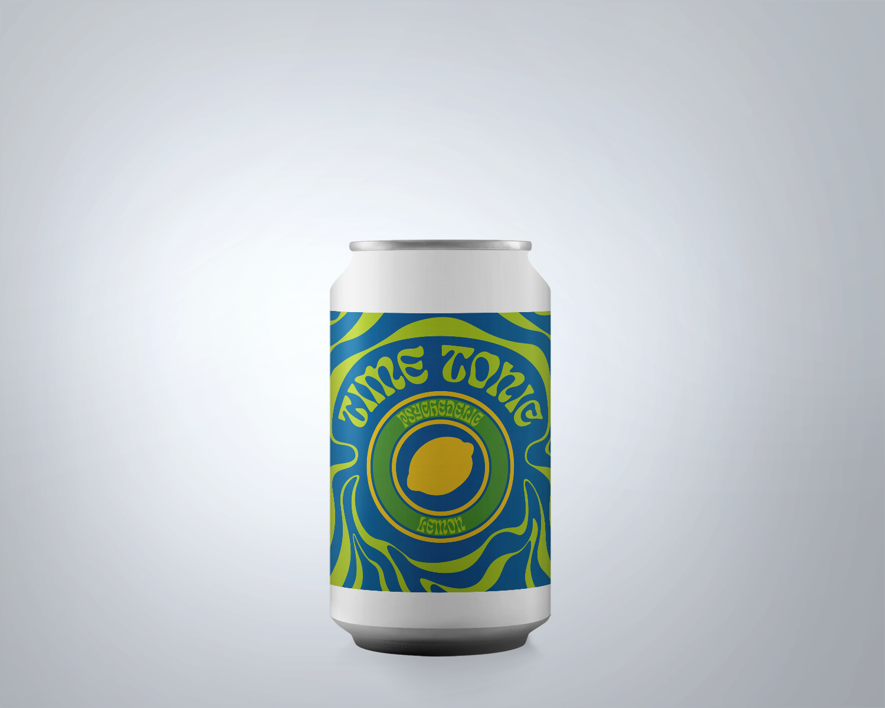
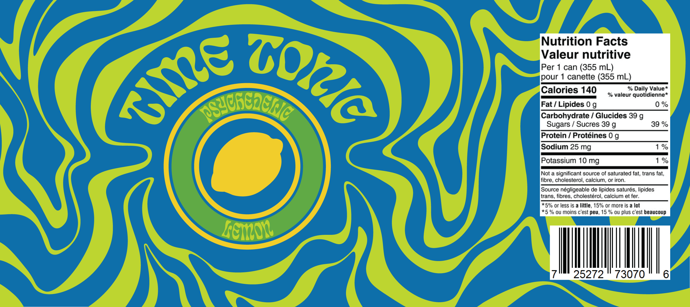

Time Tonic
 1960s - Psychedelia
Major social and political events took place in the 1960s which sparked a culture of rebellion distinct to the prim and proper 50s culture. The Civil rights movements and the beginning of a second wave of feminism meant people were beginning to defy the longstanding conservative societal norms. This rebellious mindset was prominent in the music scene, where the rock and roll lifestyle entranced youth, drawing them to experiment with drug usage.
The psychedelic movement influenced not only the music industry, but also art and design. Psychedelia was the aesthetic outcome of these LSD-driven experiences, which is known to significantly alter the mind, creating vibrant, distorted visual sensations. Psychedelic graphic design was characterized by vivid colours, loud patterns, and warped typography that sacrificed legibility in favour of expressiveness. This was meant to mimic the distorted experiences using psychedelic drugs.